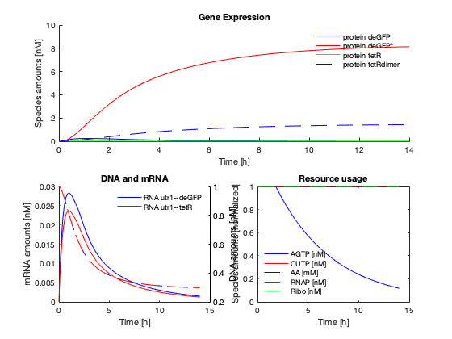

Tutorial II
tutorial_ii.m - Slightly more involved set of examples involving txtlsim. We recommend you read through the first tutorial
Vipul Singhal, 18 Mar 2020
In this tutorial, we explore and demonstrate some of the finer points of the txtlsim toolbox.
Contents
todos
- describe the IFFL circuit, along with 3OC12 and aTc addspecies. show a few different variations of what happens when the concentrations of things are changed.
- add some meat to the reactions and species naming conventions.
- show how to set the parameters in the config file
- show the constitutive expression promoter file, the repression promoter and protein files, the activator and combinatorial promoter file, and describe where to change things (including the CSV file) to get a new part made.
- show some variations: linear DNA, recBCD, gamS; clpX + lva tag
- show the intermediate species trajectories at different doses. this can be done using the plotCustomSpecies2 function.
- show the use of the globalize params, getparam, setparam methods. #
Initializing the toolbox
Remember to set the working directory to the trunk directory of the toolbox.
Use this command to add the subdirectories needed to your matlab path. To be run each time you begin a new TXTL toolbox session.
txtl_init;
IFFL example
The code below can be used to set up the constitutive GFP production example.
Set up the standard TXTL tubes These load up the RNAP, Ribosome and degradation enzyme concentrations ``E2'' refers to a configuration file
tube1 = txtl_extract('E2'); tube2 = txtl_buffer('E2'); % Now set up a tube that will contain our DNA tube3 = txtl_newtube('lastetIFFL'); % Define the DNA strands, and all the relevant reactions txtl_add_dna(tube3, ... 'plac(50)', 'utr1(20)', 'lasR(1000)', 5, 'plasmid'); txtl_add_dna(tube3, ... 'plas(50)', 'utr1(20)', 'tetR(1000)', 0.2, 'plasmid'); txtl_add_dna(tube3, ... 'plas_ptet(50)', 'utr1(20)', 'deGFP(1000)', 2, 'plasmid'); m = txtl_combine([tube1, tube2, tube3]); txtl_addspecies(m, 'OC12HSL', 1000); txtl_addspecies(m, 'aTc', 1000); % Mix the contents of the individual tubes Mobj = txtl_combine([tube1, tube2, tube3]); % Run a simulaton % tic [simData] = txtl_runsim(Mobj,14*60*60); toc t_ode = simData.Time; x_ode = simData.Data;
Elapsed time is 0.804191 seconds.
plot the result
The following function plots the proteins, RNA and resources in the toolbox. In the next section we delve deeper into the object oriented structure of the model, and how to plot arbitrary species in the model.
txtl_plot(simData,Mobj);
Current plot held
Model Structure
The model is organized as a model object, with sub objects specifying Parameters, Reactions, Species, etc. Type in
Mobj
SimBiology Model - mix_of_E2_E2_lastetIFFL
Model Components:
Compartments: 1
Events: 2
Parameters: 163
Reactions: 102
Rules: 12
Species: 80
We can see the number of instances of the various subclasses of the model object. We can explore further by typing
Mobj.Species
SimBiology Species Array Index: Compartment: Name: InitialAmount: InitialAmountUnits: 1 contents RNAP 4.7367 2 contents Ribo 266.42 3 contents RecBCD 5 4 contents RNase 30269 5 contents AGTP 3.18005e+06 6 contents CUTP 1.90803e+06 7 contents AA 3.18005e+07 8 contents protein lasR 0 9 contents OC12HSL:protein lasR 0 10 contents RNA utr1--lasR 0 11 contents Ribo:RNA utr1--lasR 0 12 contents DNA plac--utr1--lasR 5 13 contents RNAP:DNA plac--utr1--lasR 0 14 contents CUTP:AGTP:RNAP:DNA plac--utr1--lasR 0 15 contents term_RNAP:DNA plac--utr1--lasR 0 16 contents AA:AGTP:Ribo:RNA utr1--lasR 0 17 contents term_Ribo:RNA utr1--lasR 0 18 contents protein tetR 0 19 contents aTc 0 20 contents protein tetRdimer 0 21 contents RNA utr1--tetR 0 22 contents Ribo:RNA utr1--tetR 0 23 contents DNA plas--utr1--tetR 0.2 24 contents RNAP:DNA plas--utr1--tetR 0 25 contents AA:AGTP:Ribo:RNA utr1--tetR 0 26 contents term_Ribo:RNA utr1--tetR 0 27 contents protein deGFP 0 28 contents protein deGFP* 0 29 contents RNA utr1--deGFP 0 30 contents Ribo:RNA utr1--deGFP 0 31 contents DNA plas_ptet--utr1--deGFP 2 32 contents RNAP:DNA plas_ptet--utr1--deGFP 0 33 contents AA:AGTP:Ribo:RNA utr1--deGFP 0 34 contents term_Ribo:RNA utr1--deGFP 0 35 contents OC12HSL 0 36 contents AGTP:RNAP:DNA plac--utr1--lasR 0 37 contents CUTP:RNAP:DNA plac--utr1--lasR 0 38 contents AA:Ribo:RNA utr1--lasR 0 39 contents RNA utr1--lasR:RNase 0 40 contents Ribo:RNA utr1--lasR:RNase 0 41 contents AA:AGTP:Ribo:RNA utr1--lasR:RNase 0 42 contents term_Ribo:RNA utr1--lasR:RNase 0 43 contents AA:Ribo:RNA utr1--lasR:RNase 0 44 contents 2 aTc:protein tetRdimer 0 45 contents DNA plas--utr1--tetR:OC12HSL:protein lasR 0 46 contents RNAP:DNA plas--utr1--tetR:OC12HSL:protein lasR 0 47 contents CUTP:AGTP:RNAP:DNA plas--utr1--tetR 0 48 contents term_RNAP:DNA plas--utr1--tetR 0 49 contents CUTP:AGTP:RNAP:DNA plas--utr1--tetR:OC12HSL:protein lasR 0 50 contents term_RNAP:DNA plas--utr1--tetR:OC12HSL:protein lasR 0 51 contents AGTP:RNAP:DNA plas--utr1--tetR 0 52 contents CUTP:RNAP:DNA plas--utr1--tetR 0 53 contents AGTP:RNAP:DNA plas--utr1--tetR:OC12HSL:protein lasR 0 54 contents CUTP:RNAP:DNA plas--utr1--tetR:OC12HSL:protein lasR 0 55 contents AA:Ribo:RNA utr1--tetR 0 56 contents RNA utr1--tetR:RNase 0 57 contents Ribo:RNA utr1--tetR:RNase 0 58 contents AA:AGTP:Ribo:RNA utr1--tetR:RNase 0 59 contents term_Ribo:RNA utr1--tetR:RNase 0 60 contents AA:Ribo:RNA utr1--tetR:RNase 0 61 contents DNA plas_ptet--utr1--deGFP:OC12HSL:protein lasR 0 62 contents RNAP:DNA plas_ptet--utr1--deGFP:OC12HSL:protein lasR 0 63 contents CUTP:AGTP:RNAP:DNA plas_ptet--utr1--deGFP 0 64 contents term_RNAP:DNA plas_ptet--utr1--deGFP 0 65 contents CUTP:AGTP:RNAP:DNA plas_ptet--utr1--deGFP:OC12HSL:protein lasR 0 66 contents term_RNAP:DNA plas_ptet--utr1--deGFP:OC12HSL:protein lasR 0 67 contents AGTP:RNAP:DNA plas_ptet--utr1--deGFP 0 68 contents CUTP:RNAP:DNA plas_ptet--utr1--deGFP 0 69 contents AGTP:RNAP:DNA plas_ptet--utr1--deGFP:OC12HSL:protein lasR 0 70 contents CUTP:RNAP:DNA plas_ptet--utr1--deGFP:OC12HSL:protein lasR 0 71 contents DNA plas_ptet--utr1--deGFP:protein tetRdimer 0 72 contents DNA plas_ptet--utr1--deGFP:OC12HSL:protein lasR:protein tetRdimer 0 73 contents RNAP:DNA plas_ptet--utr1--deGFP:OC12HSL:protein lasR:protein tetRdimer 0 74 contents AA:Ribo:RNA utr1--deGFP 0 75 contents RNA utr1--deGFP:RNase 0 76 contents Ribo:RNA utr1--deGFP:RNase 0 77 contents AA:AGTP:Ribo:RNA utr1--deGFP:RNase 0 78 contents term_Ribo:RNA utr1--deGFP:RNase 0 79 contents AA:Ribo:RNA utr1--deGFP:RNase 0 80 contents AGTP_USED 0
Proteins, RNA and DNA generally follow the convention protein CDS, RNA 5'UTR--CDS, DNA promoter--5' UTR--CDS, with variations possible. There are also simply named `core' species like RNAP, Ribo, RNase, etc. Finally we denote bound complexes with a colon, for example, Species 1:Species 2.
We also see that each of them has certain other associated properties. You can explore further by accessing individual species using their index, and using the `get' and `set' commands to get and set the properties of the species. For example, try typing
Mobj.Species(1)
SimBiology Species Array Index: Compartment: Name: InitialAmount: InitialAmountUnits: 1 contents RNAP 4.7367
This gives you the first species in the model. You can find out what properties as associated with this species by typing in
get(Mobj.Species(1))
Annotation: ''
BoundaryCondition: 0
ConstantAmount: 0
InitialAmount: 4.7367
InitialAmountUnits: ''
Name: 'RNAP'
Notes: ''
Parent: [1×1 SimBiology.Compartment]
Tag: ''
Type: 'species'
UserData: []
and then using the set command to set its initial concentration to 50 units:
set(Mobj.Species(1), 'InitialAmount', 50)
Learn more about the get and set commands by typing in
help get help set
You may read more about how model objects are arranged in Simbiology by working through the Tutorial. Feel free to browse the reactions and other subproperties by individually typing in commands like
Mobj.reactions get(Mobj.Reactions) get(Mobj.Reactions(1)) Mobj.Reactions(1).ReactionRate Mobj.Reactions(1).KineticLaw get(Mobj.Reactions(1).KineticLaw)
and so on.
Plotting individual species
You can also plot the trajectories of any of the species in the model. Use the function findspecies to get the index of the species object of interest. For example, if you want to plot the trajectory of the dimerized tetR protein, you could type in
tetRindex = findspecies(Mobj, 'protein deGFP'); figure plot(simData.Time/3600, simData.data(:,tetRindex)); title('Un-matured protein concentration') ylabel('concentration, nM') xlabel('time, h') curraxis = axis; axis([curraxis(1:2) 0 curraxis(4)])